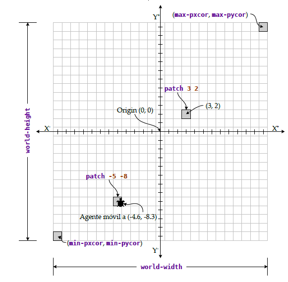
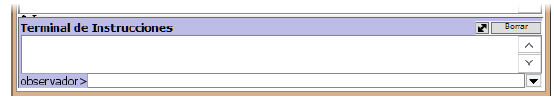
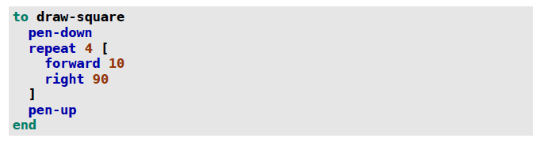
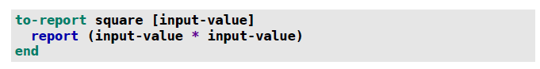
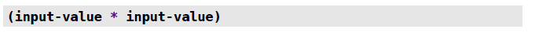
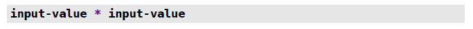

B Tutorial NetLogo
B.1 ¿Qué es NetLogo?
NetLogo es un programa de modelado y programación basado en agentes (MOBA) de código abierto, desarrollado por el Northwestern University Center for Connected Learning (CCL) and Computer-Based Modeling [1]. Se basa en el lenguaje de programación Logo original [2], incorporando y ampliando conceptos y construcciones introducidas en StarLogo y MacStarLogo [3], ambos desarrollados por el Media Lab y el Scheller Education Program del MIT.NetLogo se conoce como una herramienta basada en agentes, debido al hecho de que el lenguaje de programación y la interfaz de usuario están destinadas principalmente para el modelado y simulación de sistemas de múltiples agentes que interactúan (ver “Tipos de Agentes”, p. 13). Por lo general, estos agentes no necesitan tener comportamientos extensos o complicados; se pueden desarrollar útiles modelos a menudo con los agentes siguiendo reglas muy simples. Desarrollado en Java y Scala, y ejecutando en la máquina virtual de Java (JVM), NetLogo es muy portable: modelos escritos en NetLogo para Windows (por ejemplo) pueden ser modificado y ejecutado usando las ediciones OS X y Linux de NetLogo. Los modelos también se pueden ejecutar como applets de Java en las páginas Web (aunque este uso está obsoleto oficialmente), o traducidos “sobre la marcha” al JavaScript para la ejecución basada en navegador. Extensiones a NetLogo pueden ser elaborados en Java o Scala, y el propio NetLogo se pueden crear instancias y controlados por un programa de Java, Scala, o virtualmente cualquier otro idioma que se ejecuta en la JVM. Con cada lanzamiento (versión) importante, NetLogo se ha mejorado de manera significativa. Las características del lenguaje orientadas a los agentes se han racionalizado, para ser más consistentes y coherentes que en las versiones anteriores. Operaciones sobre listas y conjuntos se han ampliado, y el rendimiento de esas operaciones se ha mejorado. Agentes de tipo enlace se ha añadido, en apoyo no sólo para el modelado de las redes (sociales, la comunicación, etc.), sino también de estructuras físicas y lógicas, y ensamblados.
B.1.1 Terminología de NetLogo
Al igual que prácticamente todos los lenguajes de programación modernos, NetLogo tiene en común con otros lenguajes muchos conceptos y facilidades. Sin embargo, la terminología utilizada en NetLogo a veces difiere significativamente de la de otros idiomas. Algunas de estas diferencias se originaron en dialectos anteriores de Logo,mientras que otros son el resultado de decisiones deliberadas por parte de los diseñadores de NetLogo. En cualquier caso, una familiaridad con algunos de estos términos distintivos, y sus correspondencias con los términos en otros lenguajes, puede ser muy útil. Los siguientes son tres términos que son críticos para empezar: (estos y otros términos se exploran con más detalle, más adelante en este documento)
- Agente
En programación en NetLogo, los agentes son esencialmente objetos: entidades que contienen datos, comportamientos y contextos de ejecución independientes. Para los propósitos de visualización gráfica, un agente en NetLogo (y, en particular, una tortuga, o agente móvil) es más o menos equivalente al concepto de un sprite: una entidad que puede moverse y mostrarse independientemente de otros elementos gráficos. Para obtener más información sobre los tipos de agentes provistos por NetLogo, consulte “Tipos de Agentes”
- Comando
Un comando es conceptualmente equivalente a lo que se suele llamar una sentencia: la especificación de una acción a realizar, para cambiar el estado del sistema. En NetLogo, este estado incluye no sólo las variables globales, el espacio de visualización gráfica y el sistema de archivos, sino también los estados individuales de todos los agentes. Los comandos pueden ser invocaciones de los comandos primitivos (comandos definidos por NetLogo sí mismo) o de los procedimientos comandos (definidos en el código de programación de un modelo).
- Reportero
En la mayoría de los lenguajes de programación, llamamos a esto una expresión, considerando que un comando se usa para cambiar el estado del sistema, el propósito de un reportero es calcular y devolver (reportar) algún valor. Esto puede ser un valor de un tipo de datos primitivo (por ejemplo, un número, booleano, o una cadena de caracteres), un agente, o una estructura de datos que contiene (potencialmente) varios elementos de datos.Al igual que los comandos, los reporteros pueden incluir invocaciones de los reporteros primitivos, así como los procedimientos reporteros.
B.2 El mundo NetLogo
Sistema de coordenadas
En la construcción de los modelos de NetLogo es importante entender el sistema de coordenadas utilizado. Este diagrama, con las explicaciones que siguen, ilustran algunos puntos importantes para recordar:

Como el sistema de coordenadas cartesianas utilizado tradicionalmente en la geometría analítica, el mundo NetLogo tiene ejes X e Y. El centro del sistema de coordenadas es el origen (que es a menudo – pero no siempre – situado en el centro físico del mundo NetLogo), donde X e Y tienen los valores de cero (0).
Superpuesto en el sistema de coordenadas está una rejilla de cuadrículas (parcelas ó cuadrados de tamaño 1 X 1), cada uno de los cuales es un agente fijo (en Inglés y en código de NetLogo, se llama parcela). Cada tiene un color y una etiqueta opcional. También se puede definir variables adicionales para los agentes fijos.
El centro de un agente fijo es un punto en el sistema de coordenadas donde X e Y tienen valores integrales; estas coordenadas se utilizan para referirse al agente fijo. Por ejemplo, patch 3 2 en el diagrama es un cuadrado con su centro en (3, 2); este cuadrado está definido por la región donde 2,5 <= X < 3,5 and 1,5 <= Y < 2,5. (También podemos hacer referencia a los agentes fijos con coordenadas de punto flotante; se redondearán a enteros si fuera necesario.)
Las coordenadas de los agentes fijos son siempre valores enteros, pero eso no es necesariamente así en el caso de un agente móvil. En el diagrama, hay un agente móvil localizada en (-4,6, -8,3), que se encuentra en la cuadrado centrada en (-5, -8). Aunque un agente móvil puede aparecer como si es en dos o más cuadrados a la vez, el punto central del agente móvil es lo que importa: este punto central se trata como la ubicación real del agente móvil, y el cuadrado que contiene ese punto central es considerado como el cuadrado en la que el agente móvil está de pie.
El usuario puede cambiar el ancho o alto del mundo NetLogo en cualquier momento; debido a esto, el código de un programa de NetLogo no deben hacer referencia a las dimensiones del mundo con valores literales, a menos que sea absolutamente necesario. Afortunadamente, los programas de NetLogo siempre pueden utilizar world-width y world-height para obtener las dimensiones actuales del mundo (area de simulación).
Los agentes fijos en la parte extrema del lado derecho del mundo NetLogo tienen la coordenada X con el valor max-pxcor; los de la cima del mundo tienen Y con el valor max-pycor. Del mismo modo, min-pxcor y min-pycor son las coordenadas X e Y (respectivamente) de los agentes fijos en la parte izquierda extrema y parte inferior (respectivamente) del mundo NetLogo. Estas variables están relacionadas con el tamaño total del mundo, como sigue:
world-width = (max-pxcor - min-pxcor) + 1 world-height = (max-pycor - min-pycor) + 1
Ángulos y direcciones
Todos los ángulos en NetLogo se especifican en grados, y las direcciones se basan en rumbos de la brújula, con 0 estando “arriba” (es decir, al norte), el 90 hacia la derecha (es decir, al este), etc. Para instruir a un agente móvil que mire a una dirección en particular, podemos hacerlo estableciendo el rumbo del agente a la dirección deseada según la brújula, o diciendo al agente móvil que gire a la derecha o a la izquierda por el número de grados necesarios.También podemos encargar a un agente móvil que mire a otro agente especificando el segundo agente, con el comando face, en lugar de calcular la dirección de la brújula o ángulo de giro requerido.
Topología
Nótese que podemos especificar que el mundo NetLogo tenga continuidad en su borde horizontal, vertical, o ambos, o en ningún borde. Cuando el envolvente (wrapping) está encendido en posición horizontal (por ejemplo), un agente móvil se mueve fuera del borde derecho del mundo y volverá a aparecer en el borde izquierdo, y viceversa. Si el envolvente horizontal no está habilitado, el agente móvil será incapaz de salir por el borde derecho o el izquierdo.
¿Cuál es la “forma” lógica del mundo NetLogo, si el envolvente está encendido en posición horizontal, pero no verticalmente?
¿Cuál es la forma del mundo NetLogo, si el envolvente está encendido verticalmente, pero no horizontalmente?
¿Cuál es la forma del mundo NetLogo, si el envolvente está activado tanto vertical como horizontalmente?
B.3 Programación
Programación en general
Aunque las computadoras (más precisamente, los procesadores) son capaces de manipular los datos de manera muy eficiente, y aunque los procesadores modernos incluyen unidades de procesamiento de punto flotante que pueden realizar cálculos aritméticas, trigonométricas y logarítmicos impresionantes, también son ingenuos: Son generalmente incapaces de realizar la mayor parte de las tareas que el usuario medio consideraría significativa – hasta que se les enseña a hacerlas. Enseñamos a las computadoras a hacer esto a través de la programación: por medio de la codificación de un algoritmo (un procedimiento para completar una tarea o resolver un problema) en una forma que la computadora pueda entender, para lo cual se necesitará insumos específicos, y desde el cual se puede presentar un resultado significativo como salida. Afortunadamente para nosotros, prácticamente todas las computadoras modernas y disponibles en el mercado vienen con millones de líneas de estas instrucciones algorítmicas ya escritas y precargadas en los discos duros, chips de memoria programables, etc. Estas instrucciones forman parte del sistema operativo (que nos permite leer y escribir los datos desde y hacia el teclado, el monitor y archivos), controladores (que indican a la computadora cómo conectarse y hacer uso de los dispositivos de hardware, por ejemplo, adaptadores de visualización de vídeo, unidades de disco, impresoras, dispositivos de memoria externos) y aplicaciones (archivos especiales que se pueden ejecutar según la demanda por el usuario, para funciones más específica). Podemos aumentar esta capacidad a través de la instalación o elaboración de nuevos programas para que la computadora las ejecute; cuando hacemos esto, estamos literalmente enseñando a la computadora a realizar nuevas tareas.
Algunos programas de ordenadores son traductores de instrucciones: ellos permiten a los programadores escribir nuevos programas, sin que tengan que entender mucho del funcionamiento interno de la computadora. Estos traductores pueden convertir las instrucciones de los programadores hacia una forma que la computadora puede ejecutar. NetLogo es un tal traductor: nos permite escribir programas en un lenguaje especializado para describir el comportamiento de los agentes; luego convierte estos programas (modelos) en una forma que la computadora puede ejecutar, sin que tengamos que saber nada acerca de cómo la conversión se lleva a cabo. No obstante, podemos considerar los modelos de NetLogo que escribimos como secuencias de instrucciones que enseñamos a la computadora; quizá más útil, podemos considerer nuestra tarea, en la construcción de modelos de NetLogo como el de la enseñanza de NetLogo en sí mismo.
Programación en NetLogo
Damos instrucciones a NetLogo de tres maneras:
- Podemos escribir instrucciones en el Terminal de Instrucciones (Command Center):

Algunas instrucciones pueden ser incluidos en los botones y otros controles en las interfaces de usuario que creamos. Esta funcionalidad es la más utilizada para relacionar los botones que creamos a las nuevas capacidades que hemos enseñado a NetLogo en nuestro programa.
Por último, y lo más importante, cuando escribimos instrucciones en la ventana de Código, estamos creando un programa NetLogo, que consiste en uno o más procedimientos. Lo que escribimos en la ventana de Código no se ejecuta inmediatamente, pero se suma a lo que NetLogo sabe hacer. Podemos invocar a esta nueva funcionalidad a través de botones y monitores en la interfaz de usuario, escribiendo comandos en el Centro de Comando, o por referencia en otros procedimientos en el código que hemos escrito en la ventana de Código.
Procedimientos
Para enseñar un procedimiento a otra persona para completar una tarea, es posible comenzar diciendo: “Para hacer X, primero hacer A, luego hacer B”, y así sucesivamente. Enseñando a NetLogo para realizar una tarea es muy similar: utilizamos la palabra clave to, seguido del nombre de la tarea, y luego la secuencia de instrucciones que componen el procedimiento; por último, indicamos que no hay más instrucciones para esta tarea con la palabra clave end. Por ejemplo, aquí enseñamos a NetLogo un procedimiento que se puede seguir por un agente móvil para dibujar un cuadrado:
 Tenga en cuenta que hay palabras con guiones en el código de este ejemplo. Aunque esto no se permite en la mayoría de lenguajes de programación, es válido y común en los dialectos de Logo, y hay varios primitivos (comandos y reporteros definidos por NetLogo sí mismo) con nombres con guiones. Sin embargo, aunque el procedimiento y los nombres de variables pueden incluir guiones – así como muchos otros símbolos de puntuación. no pueden incluir espacios. Ahora que hemos escrito el procedimiento de draw-square (dibujar cuadrado), podemos invocarlo por su nombre en el Terminal de Instrucciones, en un botón, o en otro procedimiento. La mayoría de los lenguajes de programación soporta dos diferentes tipos de procedimientos (también llamadas funciones, métodos, subrutinas, etc.): aquellos que modifican el estado del sistema, y los que computan y devuelven un resultado. El procedimiento anterior es un ejemplo del primero: modifica el rumbo y la posición de un agente, pero no devuelve un resultado. En NetLogo, este tipo de procedimiento se llama un procedimiento comando. También podemos escribir un procedimiento que devuelve un resultado; en NetLogo, este tipo se llama procedimiento reportero. Por ejemplo, el siguiente procedimiento calcula y retorna el cuadrado de una entrada:
 La sintaxis para un procedimiento reportero difiere de la de un procedimiento comando en dos aspectos claves:
La definición de un procedimiento reportero comienza con to-report, en lugar de to.
El comando primitivo report se utiliza (y se requiere) para salir y devolver un valor de un procedimiento reportero. Como se ha visto anteriormente, parámetros de entrada se incluyen en la definición de un procedimiento (comando o reportero) por encerrándolas entre corchetes después del nombre del procedimiento. Anteriormente, vimos que podemos crear procedimientos comandos y reporteros en nuestro código. De hecho, podemos considerar cualquier programa NetLogo como un conjunto de comandos, reporteros, definiciones y declaraciones. Un comando es una instrucción que invoca (llama) a un procedimiento comando o un comando primitivo (predefinido por NetLogo), especificando los parámetros de entrada requeridos por el primitivo o procedimiento. Por ejemplo, forward 5 es un comando que indica a un agente móvil para mover 5 pasos en la dirección hacia delante; aquí, el comando primitivo es forward (hacia adelante), y la entrada requerida es un valor numérico que indica la distancia a moverse. Por supuesto, mientras que 5 es un valor numérico literal simple, podríamos usar forward (2 + 3) en su lugar, y el resultado será el mismo. Del mismo modo, si existe la variable step-length en nuestro programa, y el valor actual de step-length es de 5, entonces forward step-length también dará lugar al agente móvil a moverse 5 pasos para delante.
¿Qué tienen 5, (2 + 3) y step-length en común? Son expresiones que NetLogo puede evaluar es decir, de las cuales NetLogo puede calcular un valor. Genéricamente, y en la mayoría de los lenguajes de programación, expresiones como éstas se llaman precisamente eso: expresiones. En NetLogo, se llaman reporteros (en algunos contextos, se llaman indicadores). Así que un reportero es un simple valor literal, una variable de referencia, una invocación de un procedimiento reportero o reportero primitivos con lasentradas requeridas que son ellos mismos reporteros – o una combinación de éstos, usando operadores aritméticos o lógicos (que también son reporteros primitivos) para calcular el resultado. (Con cualquiera de las posibilidades anteriores, los paréntesis pueden usarse para especificar el orden de evaluación de manera explícita - o incluso sólo para mejor claridad visual.) El ejemplo de un procedimiento reportero en la sección anterior incluye la línea
Aquí, toda la línea es un comando, invocando el comando primitivo report, y proveyendo la entrada esperada por report. Esa entrada es el reportero

Este reporte se compone de paréntesis (utilizado aquí para dejar claro que por muy complicado que el reporte sea, estamos calculando y reportando un único valor) que rodea el reporte

El operador aritmético * es un reportero primitivo de un tipo especial: es un reportero infix (uno para el cual se requieren datos antes y después). Así que este reportero consiste en el primitivo *, con input-value (una referencia a una variable) especificada para ambas de las entradas esperadas. Podemos ir por un largo camino con los comandos y reporteros primitivos – pero no podemos realmente escribir programas NetLogo, a menos que también incluyamos declaraciones para la definición de nuevos procedimientos. Como ya vimos, hacemos eso con la palabra clave to o to-report, seguido por el nombre del procedimiento, seguido opcionalmente por una lista entre paréntesis de parámetros de entrada. Entonces, después de que los comandos que conforman el cuerpo del procedimiento, utilizamos la palabra clave end para indicar a NetLogo que se finaliza la definición del procedimiento.
Por último, la mayoría de los programas de NetLogo no triviales también requieren declaraciones. Estas son sentencias escritas al comienzo de nuestro código que declaran información esencial sobre el programa a NetLogo sí mismo: las variables globales que serán asignadas y mencionadas en el código; las razas (breeds) correspondientes a los distintos tipos de agentes móviles y de enlaces que serán utilizados; las variables que serán los atributos de nuestros agentes (más allá de los predefinido por NetLogo); las extensiones NetLogo y archivos adicionales de código fuente que nuestro programa requiere. No miramos a estos en detalle en este resumen, pero los examinaremos en el contexto de ejemplos específicos posteriores; por ahora, sólo nótese que estas declaraciones emplean las palabras claves globals, breed, undirected-link-breed, directed-link-breed, patches-own, turtles-own, links-own, breeds-own, extensions Un importante comando primitivo es en realidad una combinación de una declaración y un comando: El comando let se utiliza dentro de un procedimiento o bloque de comandos (una secuencia de comandos encerrados por corchetes) para declarar una variable local y para asignarle un valor inicial. Ese valor – y la propia variable – se conserva sólo dentro del procedimiento o del bloque de comandos donde se declara.
Tipos de Agentes
Hay cuatro tipos de agentes en NetLogo; cada uno es capaz de realizar diferentes tipos de acciones, y cada uno sirve a un propósito diferente en un modelo de NetLogo:
- Observador (observer)
- Siempre existe solo una instancia de este tipo de agente. Este agente no se visualiza en el mundo NetLogo, pero es el único agente que puede realizar ciertas operaciones globales en un modelo (por ejemplo, clear-all, tick).
- Parcela (agente fijo, cuadrado, patch)
- Esto es un agente estacionario; hay exactamente un agente fijo por cada unidad cuadrada en la cuadrícula del mundo NetLogo. Un agente fijo no se puede mostrar de una manera o forma distinta que un cuadrado, pero cada puede tener su propio color, así como una etiqueta.
- Tortuga (agente móvil, turtle)
- Esto es un agente que puede moverse por el mundo NetLogo independientemente de otros agentes; las instrucciones que especifican movimiento sólo puede ser ejecutado por los estos agentes móviles. La forma, el color, el tamaño y la etiqueta de un agente móvil pueden ser manipulados por el código de un modelo de NetLogo.
- Enlace (link)
- Estos son los agentes que conectan un agente móvil con otro. No hay instrucciones para mover enlaces directamente; un enlace se mueve cuando una o ambos de los agentes móviles en sus puntos finales se mueven. Un enlace también se puede configurar como un empalme (tie), donde el movimiento del agente móvil en uno de sus puntos finales se traduce automáticamente en el movimiento del agente móvil en otro punto final. Un enlace puede ser dirigido o no dirigido: con enlaces no dirigidos, no consideramos el enlace como proveniente de un agente móvil a otro, sino simplemente que es entre los dos; un enlace dirigido, por otro lado, es siempre de un agente móvil a otro. Los enlaces y los agentes móviles son los únicos agentes que pueden ser creados o destruidos por las instrucciones contenidas en el código del modelo. Además, los enlaces y los agentes móviles son los únicos agentes que se pueden organizar en razas. Los agentes móviles pueden interactuar con otros agentes móviles mediante la lectura de los atributos de esos agentes, o pidiendo a esos agentes para ejecutar unas instrucciones; también pueden interactuar así con los agentes fijos. Los agentes fijos pueden interactuar con agentes móviles y con otros agentes fijos. Los enlaces generalmente interactúan con los agentes móviles que son sus puntos finales, sino que se pueden interactuar con otros enlaces, agentes móviles y agentes fijos. El observador puede pedir a los agentes móviles, a los agentes fijos y a los enlaces para realizar las operaciones especificadas. Por otro lado, los agentes móviles, los agentes fijos y los enlaces no pueden pedir explícitamente al observador realizar cualquier acción. Sin embargo, los modelos tienen las variables globales (algunos predefinidos por NetLogo, y otros que podemos definir en nuestros deslizadores y en los código del programa); los agentes fijos, los enlaces y los agentes móviles pueden modificar los valores de algunas de estas variables globales – y estos cambios pueden afectar las acciones del observador.
Tipos de Datos
NetLogo es un lenguaje débilmente tipado. Cuando se declara una variable, no se especifica el tipo de datos que se grabará en la variable; la variable puede ser utilizada para almacenar cualquiera de los tipos soportados de datos. De hecho, durante la vida de una determinada variable, puede contener los datos de diferentes tipos en diferentes momentos (aunque por lo general no es una buena idea). Del mismo modo, la definición de un procedimiento reportero no especifica el tipo de dato devuelto por el procedimiento; es posible (aunque generalmente no es recomendable) que un procedimiento reportero devuelva valores de diferentes tipos en diferentes condiciones. NetLogo nativamente soporta seis tipos de datos:
- Numérico
El formato de punto flotante de doble precisión estándar IEEE 754 se utiliza internamente para todos los valores numéricos en NetLogo [4]. Este tipo de datos utiliza 64 bits para representar números enteros exactos en el rango [-253 , 253 ] y los valores de punto flotante (no exactamente, en su mayor parte) en el rango [-1.797693×10308 , 1.797693×10308 ]
- Booleano
Este es un tipo que contiene sólo los valores true (veradero) y false (falso). Tenga en cuenta que estos no son los valores de cadena (texto) “true” y “false”; tampoco son intercambiables con los valores de número entero 1 y 0, respectivamente.
- Cadena de caracteres (text)
Una cadena es una secuencia de caracteres, que puede incluir letras, números, signos de puntuación y otros símbolos, así como el espacio en blanco. Tenga en cuenta que los reporteros primitivos para la manipulación de cadena son bastante mínimas: para el procesamiento de texto de uso general, NetLogo es raramente el idioma de su elección. En particular, NetLogo no tiene capacidad integrada para convertir una cadena de dígitos y otros caracteres utilizados para la representación de números en el valor numérico correspondiente.Otra manera en que podríamos pensar en cadenas en NetLogo es como listas de caracteres (consulte “List”, a continuación): muchos de los reporteros primitivos y comandos primitivos que funcionan con listas también operan en las cadenas. Por esta razón y otras, a menudo es útil considerar cadenas no como un tipo de datosdistinto, sino como una lista especializada.
- Agente
Una variable puede almacenar (y un reportero puede devolver) una referencia a cualquier agente aparte del observador. Por ejemplo, en un modelo de ecosistema con los procesos de nacimiento y muerte, podría ser útil que cada agente móvil (en representación de algún miembro individual del ecosistema) recuerde sus padres - es decir, mantener las referencias a ellos en sus variables. Si una variable está almacenando una referencia a un agente móvil o un enlace, y ese agente muere, la variable se actualizará automáticamente para contener el valor de nobody (nadie), que es una referencia especial que no se refiere a ningún agente.
- List
La lista es la estructura de datos fundamental (un tipo compuesto de datos, posiblemente contiene múltiples componentes) en NetLogo en cuanto a eso, en la mayoría de dialectos de Logo. Una lista es una secuencia ordenada de cero o más elementos. Los elementos se pueden adjuntar (ser añadido al final de) o antepuesto (ser introducido al principio de) una lista. Cada vez que una lista dada se atraviesa (sin ninguna modificación que altere el contenido de la lista), el orden de los elementos permanecerá consistente. La heterogeneidad es otra propiedad importante de las listas en NetLogo: Cada elemento puede ser de cualquiera de los tipos disponibles de datos (incluyendo listas). En parte debido a la temprana influencia de Lisp (otra lenguaje de programación) en Logo, y en parte debido a la polinización cruzada desde Python y otros lenguajes, NetLogo incluye un amplio conjunto de primitivos para el manejo de listas. Incluso muchos modelos de NetLogo que no utilizan la mayor parte de estos primitivos, o que no asigna explícitamente valores del tipo lista a las variables, todavía emplean listas implícitamente ,por ejemplo, como valores de entrada con los reporteros que calculan estadísticas agregadas (count, max, mean, min, sum, etc.). Muchos de estos usos se encuentran cuando se leen valores de todos los miembros de un conjunto de agentes (a continuación).
B.3.1 Conjunto de agentes (agentset)
El conjunto de agentes es la segunda estructura de datos fundamental en NetLogo. La mayoría de los lenguajes de programación y las bibliotecas que implementan listas y conjuntos diferencian estos dos tipos de datos en la misma forma que se diferencian los correspondientes conceptos matemáticos:
- A pesar de que una lista es ordenada, un conjunto no lo es. Al agregar un miembro a un conjunto, no tenemos control sobre la posición de ese miembro dentro del conjunto , de hecho, “posición” no tiene sentido para los conjuntos. Si leemos un conjunto varias veces, incluso sin la adición o eliminación de miembros entre los recorridos, el orden de recorrido puede ser diferente cada vez.
- Una lista puede contener el mismo valor en múltiples posiciones dentro de la lista. Un conjunto contiene un especificado valor o bien no lo contiene no puede contener varias instancias del mismo valor al mismo tiempo.En la implementación de NetLogo, los conjuntos tienen algunas limitaciones importantes:
Un conjunto sólo puede contener agentes (más exactamente, contiene referencias a los agentes). NetLogo no admite conjuntos de valores numéricos, conjuntos de cadenas, conjuntos de conjuntos, etc. Por eso los conjuntos de NetLogo se llaman agentsets.
Conjuntos de agentes son homogéneos: Sólo un tipo de agente se puede contener en un conjunto en cualquier momento dado. Así que un conjunto no puede (por ejemplo) contener agentes fijos y móviles simultáneamente. (También, como las variables simples no pueden referirse al observador, el observador no puede incluirse en un conjunto de agentes.) Aún con estas limitaciones, los conjuntos de NetLogo son muy útiles y dominar su uso es una parte esencial de convertirse en un experto desarrollador de los modelos de NetLogo. Un conjunto se puede filtrar por una variedad de predicados lógicos, para crear un subconjunto; se puede atravesar con el propósito de obtener información de todos los miembros (esto produce una lista de valores); tan fácilmente, se puede atravesar con el propósito de pedir a cada miembro para llevar a cabo uno o más comandos; se puede combinar con otro conjunto, para construir un nuevo conjunto de la unión, la intersección, o la diferencia de los dos. Las razas de agentes móviles y enlaces pueden considerarse como conjuntos especiales, en los cuales NetLogo maneja la membresía automáticamente.Además de los tipos de datos anteriores, las extensiones de NetLogo pueden definir nuevos tipos de datos simples y estructurados; referencias a instancias de estos tipos de datos se pueden devolver por procedimientos reporteros y asignar a variables. Unos ejemplos notables de esto son las estructuras de datos definidas por las extensiones tabla, matriz y GIS, que se incluyen en la instalación estándar de NetLogo.